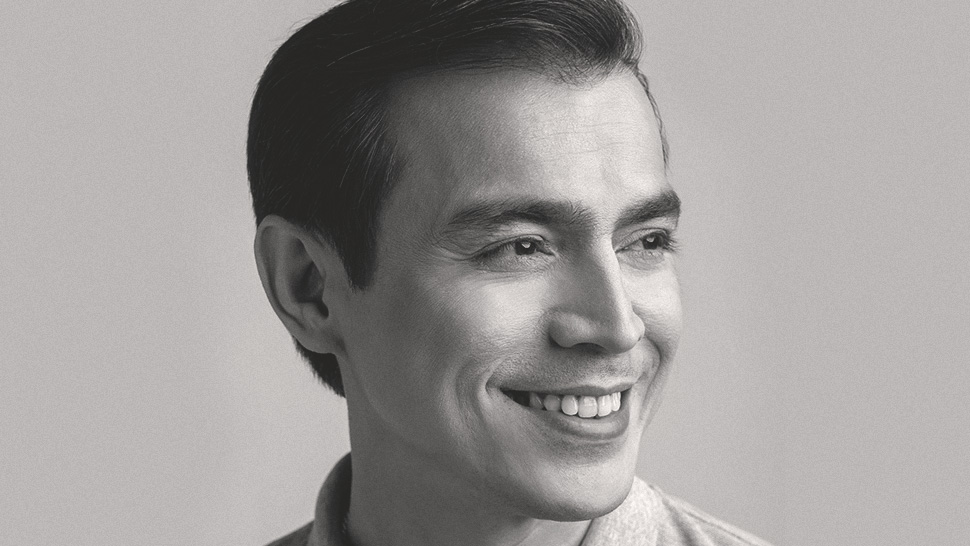
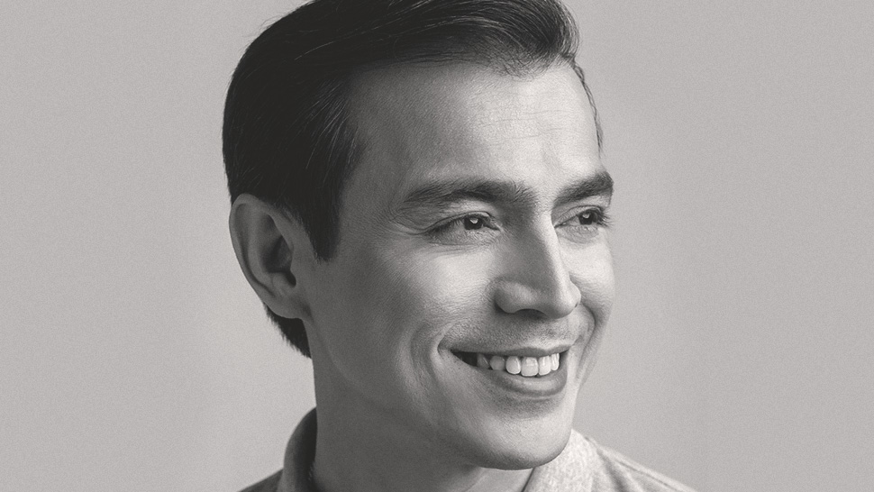

| Presidentiables2022 | Candidate 1 | Candidate 2 | Candidate 3 | Candidate 4 | Candidate 5 | Candidate 6 | Sources |
|---|
| Accounts the maker follows |
|---|
Francisco "Isko" Moreno Domagoso
.jpg)
.jpg) 


Latest News
Aksyon Demokratiko standard-bearer and Manila City Mayor Isko Moreno claimed the "underdog" title in the presidential derby on Tuesday but claimed he was unfazed by survey results showing he was tied for third place with Sen. Manny Pacquiao after garnering just 8% overall votes. (PHILSTAR)
Qualifications
Francisco "Isko" Moreno Domagoso is a Filipino politician and actor currently serving as the 22nd mayor of Manila. Before heading the capital of the Philippines, he started to gain notability as an actor and television personality.
He obtained his business administration degree from the International Academy of Management and Economics in Makati. He took a crash course in Local Legislation and Local Finance at the University of the Philippines Diliman.He then studied public administration at the Pamantasan ng Lungsod ng Maynila (University of the City of Manila). He also attended short courses in leadership and governance at the John F. Kennedy School of Government at Harvard University, and at the Said Business School, University of Oxford.
.jpg)
Stands on various issues
He is against vandalism. He is famous for the mass cleaning and beautification of the city of Manila. He is also known for his consistent and controversial stand against vandalism and unauthorized tarpaulins.
Moreno signed an ordinance protecting members of the LGBT community from discrimination and abuse, including the denial of employment and other opportunities on the basis of the person's sexual gender identity. However, he clarified in an interview that he is not in favor of same-sex marriage. He added that it is our law and in a civilized world, we are guided by the law.
Issues and controversies
He sometimes orders the removal of specific tarpaulins
He allegedly supports the CPP-NPA
He is accused of welcoming terrorists
Political Advertisements